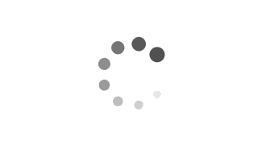

HDR
Evaluating our PL-EVIO in HDR.


PL-EVIO tightly couple the point-based and line-based visual residuals from the event camera, the point-based visual residual from the standard camera, and the residual from IMU pre-integration using a keyframe-based graph optimization framework. These three kinds of features are well integrated together to leverage additional structure or constraint information for more accurate and robust state estimation.
Evaluating our PL-EVIO in HDR.
Evaluating our PL-EIO in fast motion.
Our PL-EVIO compared with the ORB-SLAM3, VINS-Fusion, and Ultimate-SLAM methods in the UZH-FPV dataset.
@article{GWPHKU:PL-EVIO,
title={PL-EVIO: Robust Monocular Event-based Visual Inertial Odometry with Point and Line Features},
author={Guan, Weipeng and Chen, Peiyu and Xie, Yuhan and Lu, Peng},
journal={IEEE Transactions on Automation Science and Engineering},
volume={21},
number={4},
pages={6277--6293},
year={2023},
publisher={IEEE}